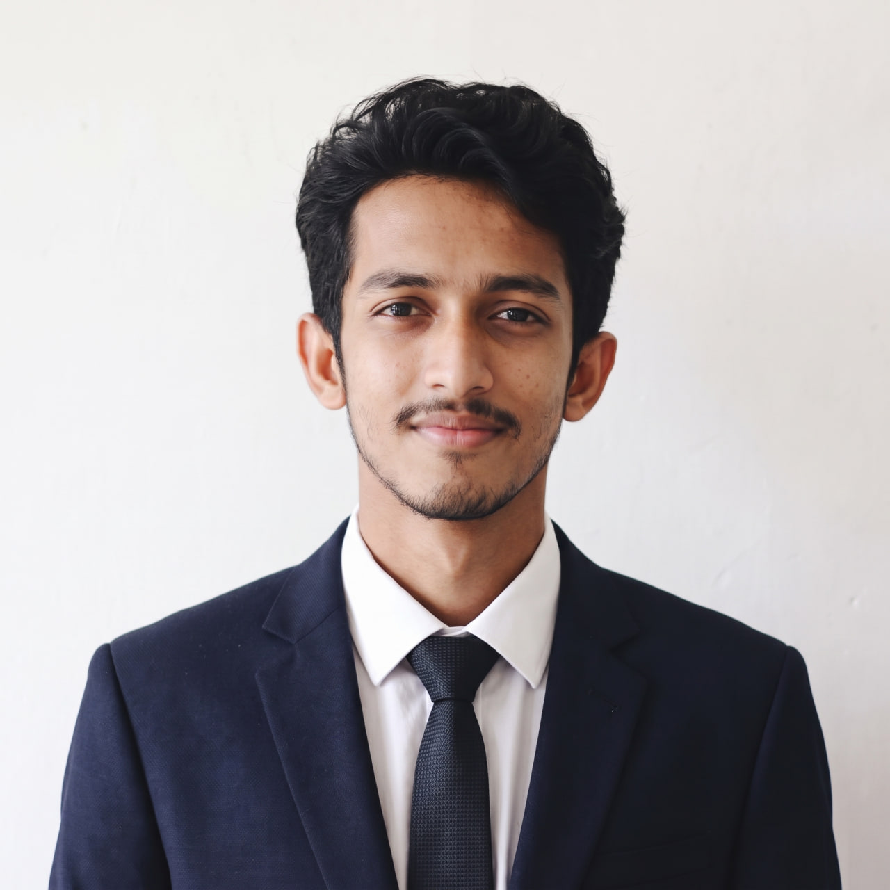
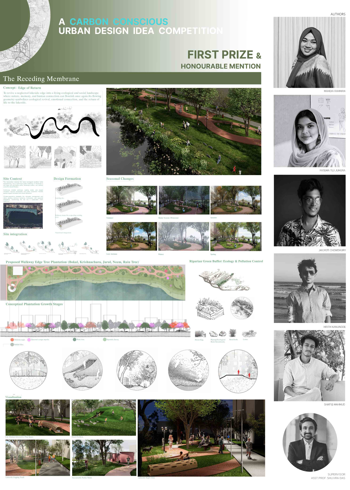
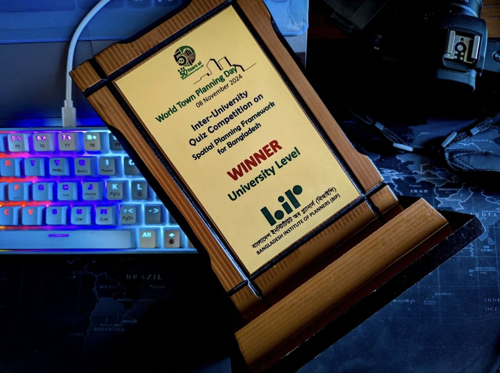
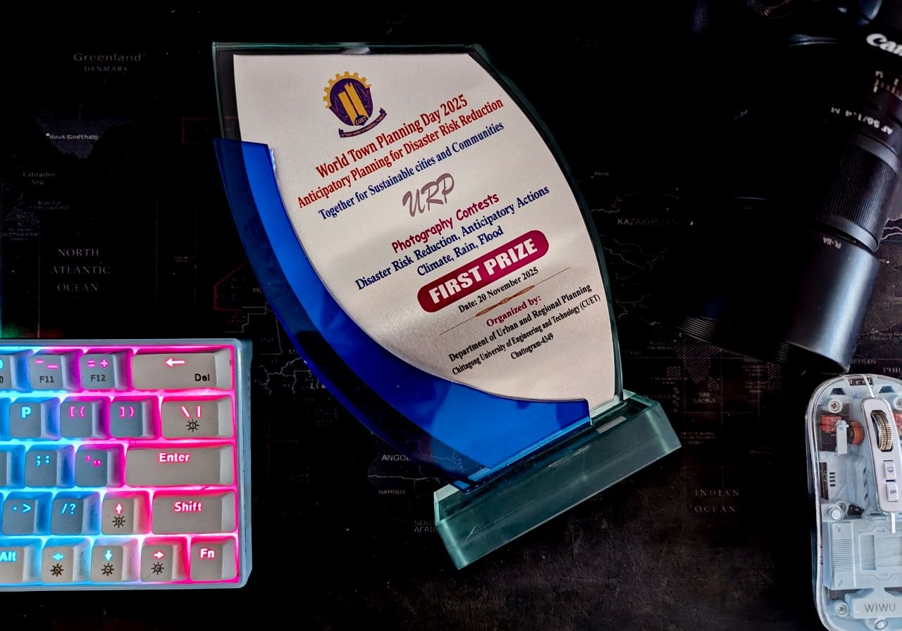
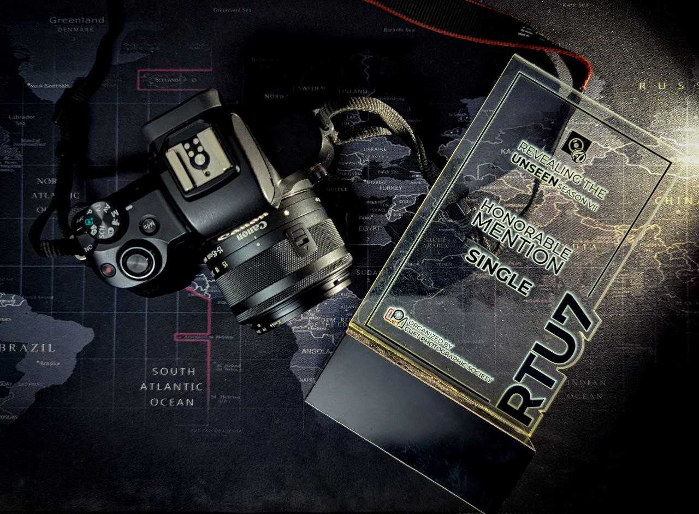

SMShafiq Mahmud
Undergraduate researcher in Urban and Regional Planning at CUET, building uncertainty-aware geospatial models for flood, landslide, drought and storm risk.
PublicationsEmailLinkedIn ↗About
I am an undergraduate researcher in the Department of Urban and Regional Planning at CUET, specializing in GIS, remote sensing and machine learning for flood, landslide, drought and storm hazard risk assessment. I have co-authored research on flood and landslide susceptibility modeling and national-scale drought monitoring, and I am completing a thesis on machine learning-based agricultural drought risk assessment. I am seeking to apply geospatial expertise and analytical thinking to evidence-based, disaster-resilient urban planning research.
Research Interests
Geospatial Artificial Intelligence (GeoAI) and Machine Learning
Spatial prediction, susceptibility modeling, model generalization and uncertainty quantification.
Remote Sensing and GIS
Satellite-based environmental monitoring, geospatial data analysis and spatial modeling.
Hydrology and Water Resources
Flood and drought assessment, hydrological modeling and water-related risk analysis.
Climate Change, Environmental Hazards and Resilience
Agricultural drought, flood and landslide susceptibility, climate-related risks and environmental resilience.
Publications
Enhancing the Generalization of Flood Susceptibility Models: A Leakage-Aware Ensemble Framework for Deltaic Landscapes
Shafiq Mahmud, Golam Murad, Md. Aftabur Rahman
View preprint ↗Uncertainty-Aware Bayesian Machine Learning for Landslide Susceptibility Mapping in the Chattogram Metropolitan Hill System, Bangladesh
Golam Murad, Md. Aftabur Rahman, Shotabdy Chowdhury Srabony, Shafiq Mahmud
View preprint ↗National-Scale Drought Mapping Using Satellite-Derived Biophysical Indices: Towards a Robust Drought Monitoring System in Bangladesh
International Conference on Civil Engineering Research & Innovations, RUET (Paper ID: 336). Sajib Sarker, Shafiq Mahmud, Akifa Monjur, Md. Abdullah Talbi, Joy Sikder
View on ResearchGate ↗Fragile Slopes, Damaged Roads: An Investigation into Clustered Landslides along the Rajasthali-Saichal Segment of the Border Road, Bangladesh
Examines the causes and impacts of clustered landslides along the border road segment. Shafiq Mahmud, Golam Murad, Md. Aftabur Rahman
Ongoing Research
Machine Learning-Based Agricultural Drought Risk Assessment in Bangladesh
Department of Urban and Regional Planning, CUET
Uncertainty-informed bivariate decision zones for storm-impact susceptibility in the cyclone-exposed southwestern coast of Bangladesh
Anindya Baidya, Anik Chowdhury, Shafiq Mahmud, Md. Aftabur Rahman*, Tanvir Ahmed (*corresponding author)
Coastal Land Dynamics of Noakhali, Bangladesh (2000–2020): A Multi-Sensor Remote Sensing Analysis and Engineering Assessment for Economic Zone Development
Education
Bachelor of Urban and Regional Planning
Chittagong University of Engineering and Technology (CUET). CGPA 3.35 (up to 6th semester).
HSC, Dhaka College
GPA 5.00
SSC, Basurhat A.H.C Government High School
GPA 5.00
Academic Projects
Flood Susceptibility Mapping in Noakhali Using ANN
Developed an ANN-based flood susceptibility model using geospatial and hydro-climatic conditioning factors.
View report (PDF) ↗Nighttime Light Emissions and Urban Vulnerability, Dhaka
- Derived NDBI maps for 2015, 2020 and 2025
- Correlated built-up intensity with nighttime light
- Mapped the most vulnerable urban zones
Air Quality and Its Impact in Chattogram City Corporation
Assessed key air quality indicators and their impact on the urban environment and public health.
View report (PDF) ↗Skills
Geospatial & Remote Sensing
ArcGIS ProArcMapQGISERDAS ImagineGoogle Earth EngineProgramming & Modeling
PythonRJavaScriptMachine learningSusceptibility modelingUncertainty-aware methodsCore Competencies
Geospatial analysis & modelingDisaster risk & vulnerability assessmentResearch & technical writingData-driven decision makingTeam leadershipDesign & Media
AutoCADSketchUpPhotoshopLightroomPremiere ProDaVinci ResolveCapCutCanvaWord / Excel / PowerPointLanguages
BanglaEnglishBeyond Research
Honors & Awards

First PrizeCarbon Conscious Urban Design Idea Competition
UNOPS, RAJUK, MoHPW, with support from BMZ. Concept: “The Receding Membrane”.

Winner · Nov 8, 2024Inter-University Quiz on Spatial Planning Framework for Bangladesh
University level. Bangladesh Institute of Planners.

First Prize · Nov 20, 2025World Town Planning Day Photography Contest
Theme: Anticipatory Planning for Disaster Risk Reduction, CUET.

Honorable Mention · Jun 25, 2026Revealing the Unseen: Season VII
Single category, CUET Photographic Society.
Professional & Field Experience
Industrial Attachment, Dhaka North City Corporation (DNCC)
Team-based study of ward-wise community facilities (health, community, religious, parks and playgrounds). Compared provision against Private Residential Land Development Rules (PRLDR) standards and prepared a comparative analytical report.
Field Visit, Cox’s Bazar Development Authority & Khurushkul Special Ashrayan Project
Observed on-site urban management works, from solid waste management to other services, and visited the world’s largest climate-migrant rehabilitation initiative.
Leadership
- President, CUET Photographic Society (Executive Committee 2026–27)
- Vice-President, Planning Club, CUET (Executive Committee 2026–27)
- Organizing Committee Member, TEDxCUET (2025)
Media & Communication
- Photography and videography for YPSA, RIMES and Save the Children, covering landslide documentation, field programs and a flood-response documentary.
- Drone-based aerial photography and videography, DSLR operation and video editing.
- YouTube channel of GIS & Remote Sensing tutorials (ArcGIS Pro, ArcMap, ERDAS Imagine) on image classification, network analysis, ModelBuilder and more. Watch the tutorials ↗
Contact
Open to graduate study opportunities and research collaboration.
shafiqmahmud35@gmail.comLinkedIn ↗YouTube ↗